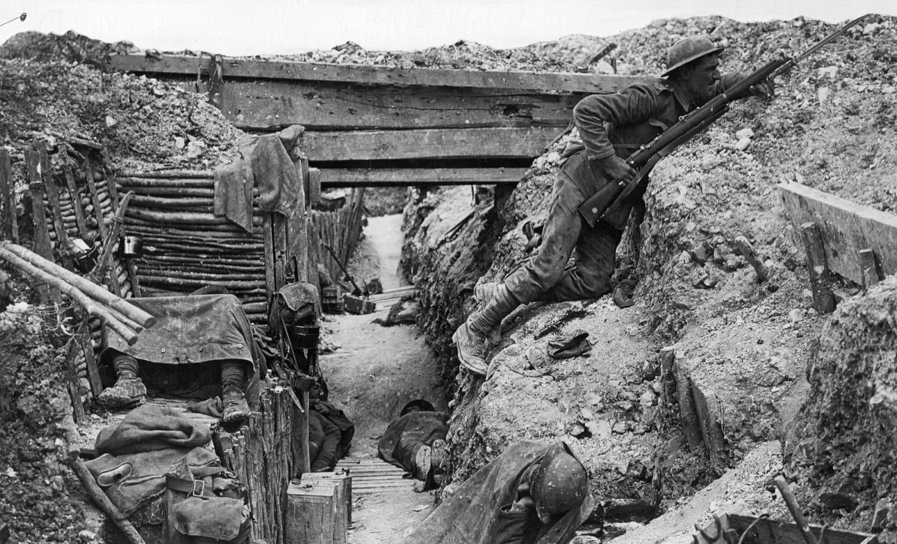

The 20th century is a period that spans from January 1, 1901, to December 31, 2000. It was a time of unprecedented change and development in human history, characterized by rapid technological advancements, significant political upheavals, major social movements, and transformative cultural shifts. This century witnessed two world wars, the rise and fall of empires, the emergence of new ideologies, and significant advancements in science and technology that reshaped daily life. The 20th century can be divided into several distinct phases, each marked by its unique challenges and achievements, making it a pivotal era in understanding modern civilization.
One notable example of the 20th century is the **civil rights movement** in the United States, which emerged as a powerful force for social change in the 1950s and 1960s. This movement aimed to combat racial discrimination and segregation against African Americans, advocating for equal rights under the law and challenging deeply entrenched systemic racism. Key figures such as **Martin Luther King Jr.**, who championed nonviolent resistance and delivered his iconic "I Have a Dream" speech during the **1963 March on Washington**, played pivotal roles in galvanizing public support and drawing national attention to the plight of Black Americans. The movement led to significant legislative achievements, including the **Civil Rights Act of 1964**, which outlawed discrimination based on race, color, religion, sex, or national origin, and the **Voting Rights Act of 1965**, which aimed to eliminate barriers to voting for African Americans. The civil rights movement not only transformed American society but also inspired other social movements around the world, highlighting the universal struggle for justice and equality.
The 20th century was marked by profound political changes that have had lasting impacts on contemporary global politics. The century witnessed the rise and fall of various political ideologies, including liberalism, fascism, communism, and nationalism, which continue to influence current political discourse. Key events such as the two World Wars not only redefined national boundaries and power dynamics but also laid the groundwork for international relations in the post-war era. The emergence of the United Nations aimed to foster global cooperation and prevent future conflicts, reflecting the lessons learned from the devastating wars. Additionally, the Cold War period created a bipolar world dominated by the rivalry between the United States and the Soviet Union, shaping foreign policies and military strategies that still resonate today. By studying the political developments of the 20th century, individuals can better understand the origins of current geopolitical tensions, the challenges of global governance, and the ongoing struggles for democracy and human rights worldwide. This knowledge is crucial for informed citizenship and active engagement in contemporary political issues.
Another critical reason to learn about the 20th century is to comprehend the social changes and civil rights movements that have transformed societies, particularly in terms of issues related to race, gender, and class. The century was a battleground for social justice, with various movements advocating for equality and challenging systemic oppression. The civil rights movement in the United States, led by figures like Martin Luther King Jr. and Rosa Parks, sought to dismantle racial segregation and discrimination, inspiring similar movements around the world, such as the anti-apartheid struggle in South Africa led by Nelson Mandela. Additionally, the feminist movements of the 20th century sought to secure women’s rights, addressing issues such as suffrage, reproductive rights, and workplace equality. The LGBTQ+ rights movement also gained momentum during this century, advocating for acceptance and equal rights for sexual minorities. Understanding these movements and their historical contexts helps individuals appreciate the ongoing struggles for social justice and the importance of advocacy. It highlights how grassroots activism can lead to significant societal changes, empowering individuals to contribute positively to current social issues and movements.
The 20th century was a period of remarkable technological advancements and cultural evolution that fundamentally altered the way people live, work, and communicate. Innovations such as the automobile, television, personal computers, and the internet transformed daily life and created a more interconnected world. The development of space exploration, epitomized by the Apollo 11 moon landing in 1969, expanded humanity’s horizons and inspired generations to pursue careers in science and engineering. Understanding these technological breakthroughs is vital as they inform contemporary discussions about innovation, sustainability, and the ethical implications of new technologies. In addition to technological progress, the century also saw significant shifts in cultural expression, with movements in literature, art, music, and film reflecting the complexities of modern life. The rise of global cultures and the blending of artistic styles have contributed to a rich, diverse cultural landscape that continues to evolve. By studying the technological and cultural developments of the 20th century, individuals can gain insights into how these advancements have shaped societal values and norms, equipping them to navigate and contribute to the rapidly changing cultural landscape of the 21st century.
World War I, often referred to as the "Great War," was one of the most significant events of the 20th century, fundamentally altering the geopolitical landscape of Europe and the world. Triggered by the assassination of Archduke Franz Ferdinand of Austria in June 1914, the conflict quickly escalated into a full-scale war involving major powers divided into two main alliances: the Allies, which included France, Russia, and the United Kingdom, and the Central Powers, led by Germany, Austria-Hungary, and the Ottoman Empire. The war was characterized by trench warfare, which resulted in staggering casualties and little territorial gain for either side. Innovative technologies, such as tanks, machine guns, and chemical weapons, were introduced, leading to unprecedented levels of destruction and suffering. The war ended with the signing of the Treaty of Versailles in 1919, which imposed heavy reparations on Germany and redrew national borders across Europe and the Middle East. This treaty, along with the emergence of new nation-states, sowed the seeds of political and social unrest that would ultimately lead to World War II. The aftermath of World War I also set the stage for significant social changes, including movements for women's suffrage and the rise of labor rights, as societies grappled with the consequences of war. More about World War I
Cr.: Britannica
The Great Depression was a worldwide economic crisis that began with the Stock Market Crash of October 1929 and lasted throughout the 1930s. The crash resulted in a devastating financial collapse that wiped out millions of investors and led to widespread bank failures, business closures, and mass unemployment. In the United States, the unemployment rate soared to approximately 25% by 1933, and millions were plunged into poverty, leading to significant social upheaval and hardship. The Great Depression had far-reaching effects not only on the American economy but also on economies around the globe, as countries struggled to cope with the downturn. Governments implemented various responses to mitigate the crisis, with the United States introducing Franklin D. Roosevelt’s New Deal, a series of programs and reforms designed to stimulate economic recovery, provide relief to the unemployed, and reform the financial system. The Depression also paved the way for the rise of totalitarian regimes in Europe, as economic instability and social discontent led to the appeal of extremist political ideologies. The economic turmoil of the 1930s fundamentally changed the role of government in economic affairs, leading to increased intervention and the establishment of social safety nets in many countries. More about Great Depression
Cr.: International Brotherhood of Teamsters
World War II was a global conflict that involved the majority of the world’s nations and is often regarded as the most significant and destructive event of the 20th century. The war began on September 1, 1939, when Germany, led by Adolf Hitler, invaded Poland, prompting Britain and France to declare war. Over the next six years, the conflict expanded to include multiple theaters of war, with the Allies (including the United States, the Soviet Union, the United Kingdom, and China) battling the Axis Powers (primarily Germany, Italy, and Japan). The war was marked by significant events such as the Battle of Britain, the invasion of the Soviet Union, and the attack on Pearl Harbor, which led to the United States' entry into the war. The conflict saw the use of unprecedented military tactics, including blitzkrieg and naval warfare, and culminated in the horrific use of atomic bombs on the Japanese cities of Hiroshima and Nagasaki in August 1945, leading to Japan’s surrender and the end of the war. The aftermath of World War II had profound implications, leading to the establishment of the United Nations, a new international order aimed at promoting peace and cooperation. The war also resulted in significant geopolitical changes, including the division of Europe into Eastern and Western blocs, the onset of the Cold War, and the decolonization of Asia and Africa as former colonies sought independence from European powers. More about World War 2
Cr.: Britannica
The Cold War was a prolonged period of geopolitical tension between the Soviet Union and its satellite states, collectively known as the Eastern Bloc, and the United States and its allies in the Western Bloc. This ideological conflict, which emerged in the aftermath of World War II, was characterized by a struggle for global influence and power, leading to a series of proxy wars, nuclear arms races, and ideological confrontations. The Cold War began in earnest in 1947, with the announcement of the Truman Doctrine, which aimed to contain the spread of communism, followed by the Marshall Plan, which provided economic aid to rebuild Western European economies. The conflict was marked by significant events, including the Korean War (1950-1953), the Cuban Missile Crisis (1962), and the Vietnam War (1955-1975), each of which highlighted the tensions and rivalries of the period. The arms race between the superpowers led to the accumulation of nuclear weapons, raising fears of global annihilation. The Cold War also had a profound cultural impact, influencing art, literature, and social movements, as fears of communism and espionage permeated daily life. The eventual collapse of the Soviet Union in 1991 marked the end of the Cold War, leading to significant geopolitical changes, including the expansion of NATO and the emergence of the United States as the sole superpower.
Cr.: Shahid H.Raja - Medium
The Civil Rights Movement was a pivotal social movement in the United States during the 1950s and 1960s that sought to end racial discrimination and segregation against African Americans. The movement gained momentum in the wake of World War II, as returning veterans and educated African Americans began to challenge the systemic injustices they faced. Key events, such as the Montgomery Bus Boycott in 1955, sparked by Rosa Parks’ refusal to give up her seat to a white passenger, exemplified the fight against segregation. The leadership of figures like Martin Luther King Jr., who advocated for nonviolent resistance and civil disobedience, played a crucial role in mobilizing support for civil rights legislation. The movement culminated in significant milestones, including the Civil Rights Act of 1964, which prohibited discrimination in public accommodations and employment, and the Voting Rights Act of 1965, which aimed to eliminate barriers preventing African Americans from voting. The Civil Rights Movement not only transformed American society but also inspired global movements for justice and equality, highlighting the interconnectedness of struggles for human rights. The legacy of the movement continues to influence contemporary discussions on race, justice, and equality, making it a foundational aspect of modern American history.
Cr.: UGA Libraries
One of the most significant political changes in the 20th century was the decline of imperial powers and the emergence of nation-states, particularly in Europe, Asia, and Africa. At the beginning of the century, large empires like the British, French, Austro-Hungarian, Ottoman, and Russian empires controlled vast territories across the globe. However, the two World Wars severely weakened these imperial powers, leading to the collapse or significant reduction of many empires by the mid-century. The Treaty of Versailles in 1919, which ended World War I, redrew European borders and dismantled the Austro-Hungarian and Ottoman Empires, giving rise to several new nation-states in Eastern Europe and the Middle East. Following World War II, decolonization became a major political force as former colonies in Asia and Africa sought independence. The British Empire, once the largest in history, saw the independence of India and Pakistan in 1947, marking the beginning of the end for British colonial rule. Throughout the 1950s and 1960s, waves of decolonization spread across Africa, with newly independent states emerging from former colonial territories. This period was marked by nationalist movements, sometimes peaceful but often violent, as newly formed nations navigated post-colonial challenges. The rise of nation-states fundamentally changed the global political landscape, leading to new geopolitical challenges and opportunities for self-determination.
The early 20th century saw the rise of authoritarian ideologies, most notably fascism and totalitarianism, which dramatically shaped the political landscape and led to devastating global conflicts. The rise of fascism in Italy under Benito Mussolini in the 1920s, and later in Germany under Adolf Hitler and the Nazi Party, was a response to the political instability, economic depression, and social unrest that followed World War I. These regimes rejected liberal democracy, embraced extreme nationalism, and sought to create authoritarian states with centralized power and strict control over society. The Nazis in Germany, under Hitler’s leadership, promoted ideas of racial superiority and anti-Semitism, which culminated in the Holocaust, one of the darkest chapters of the 20th century. In addition to Germany and Italy, fascist movements gained traction in Spain, where Francisco Franco rose to power after the Spanish Civil War, and in several other countries. At the same time, totalitarianism also emerged in the Soviet Union under Joseph Stalin, where the Communist regime implemented extreme centralization, purges of political opponents, and control over the economy and society. Stalin's policies, including forced collectivization and political repression, resulted in millions of deaths. These authoritarian regimes played a central role in leading to World War II, which became a global struggle between fascism, communism, and the democratic powers.
Perhaps the defining political feature of the second half of the 20th century was the Cold War, a prolonged period of ideological and geopolitical rivalry between the United States and the Soviet Union. Following the end of World War II, the world became divided into two opposing blocs: the capitalist Western Bloc, led by the United States, and the communist Eastern Bloc, dominated by the Soviet Union. This division was not merely about territorial control but was also a conflict between two fundamentally different ideologies—capitalism and liberal democracy versus communism and centralized state control. While the Cold War never escalated into direct military confrontation between the superpowers, it was characterized by proxy wars, arms races, and ideological battles fought through influence in developing countries. The Korean War (1950-1953) and the Vietnam War (1955-1975) are key examples of how Cold War tensions erupted into military conflicts in third-party nations. These wars, along with the Cuban Missile Crisis of 1962, highlighted the dangers of nuclear war, as both the U.S. and the Soviet Union amassed vast arsenals of nuclear weapons during the arms race. The Cold War also influenced space exploration, known as the Space Race, as both superpowers sought to demonstrate their technological superiority. The Cold War came to an end with the collapse of the Soviet Union in 1991, marking the end of the bipolar world and signaling the triumph of liberal democratic values over communism, although new global challenges soon emerged.
Despite the rise of authoritarian regimes in the early 20th century, the latter half of the century saw significant progress in the spread of democracy and the establishment of human rights as central principles of governance. In the aftermath of World War II, the horrors of the Holocaust and widespread human rights abuses led to a growing global consensus on the need to protect individual rights. The United Nations was established in 1945, with one of its primary goals being the promotion of human rights and international peace. The adoption of the Universal Declaration of Human Rights in 1948 was a landmark moment in the global recognition of individual freedoms and rights. Over the century, many countries transitioned from authoritarian or colonial rule to democratic forms of governance, often through mass movements for independence or civil rights. In the United States, the Civil Rights Movement of the 1950s and 1960s challenged racial segregation and discrimination, leading to significant legislative changes, including the Civil Rights Act of 1964 and the Voting Rights Act of 1965. Similarly, movements for gender equality gained momentum, with women securing the right to vote in many countries and pushing for broader social and economic rights throughout the century. The end of apartheid in South Africa in the early 1990s, which saw the election of Nelson Mandela as president, was another major victory for human rights and democracy, symbolizing the global struggle against racial oppression. These movements and developments reflect the 20th century’s shift towards greater political freedom and the promotion of human rights as universal values.
The 20th century also saw the development of institutions and frameworks aimed at promoting international cooperation, peace, and economic stability. Following the devastation of the two World Wars, world leaders sought to create mechanisms that would prevent such large-scale conflicts from occurring again. The League of Nations, formed after World War I, was an early attempt at creating a global organization for conflict resolution, although it ultimately failed to prevent the outbreak of World War II. However, after the war, the establishment of the United Nations (UN) in 1945 created a more robust and enduring platform for international diplomacy and peacekeeping. The UN’s role expanded over the decades to include humanitarian aid, conflict resolution, and global initiatives such as the Millennium Development Goals and later the Sustainable Development Goals aimed at eradicating poverty and promoting sustainability. In addition to the UN, the creation of the World Bank and the International Monetary Fund (IMF) in 1944 helped stabilize the global economy and support post-war reconstruction efforts. These institutions played key roles in facilitating global economic growth and addressing financial crises. The 20th century also saw the establishment of military alliances, such as NATO (North Atlantic Treaty Organization) and the Warsaw Pact, which shaped the security policies of member nations and played a crucial role during the Cold War. International law, particularly regarding human rights and war crimes, also developed significantly, with institutions like the International Criminal Court emerging to hold individuals accountable for atrocities. The development of these institutions highlights the growing recognition of the need for collective global governance and the interdependence of nations in addressing global challenges.
Decolonization was one of the most important political trends of the 20th century, as many regions, particularly in Africa, Asia, and the Middle East, gained independence from European colonial rule. After centuries of imperial domination, the aftermath of World War II saw the accelerated dissolution of colonial empires and the birth of numerous newly sovereign states. European powers, weakened by the war and increasingly challenged by nationalist movements, faced growing pressure to grant independence to their colonies. In India, Mahatma Gandhi's philosophy of nonviolent resistance and mass civil disobedience led to independence from British rule in 1947. This moment inspired anti-colonial movements worldwide, and over the following decades, countries across Africa and Southeast Asia sought to end foreign domination. The African Independence Movements of the 1950s and 1960s saw countries like Ghana (1957), Nigeria (1960), and Kenya (1963) gaining freedom from colonial powers. The end of the French colonial empire was marked by the Algerian War of Independence (1954-1962), a brutal conflict that highlighted the human cost of decolonization. These newly independent nations often faced significant political, economic, and social challenges, including underdeveloped infrastructures and the need to navigate Cold War geopolitics. Many aligned themselves with the Non-Aligned Movement, a coalition of countries that sought to remain neutral in the Cold War, advocating for independence from both the Soviet Union and the United States. The emergence of the Global South as a political and economic force shifted international relations, giving voice to developing countries in forums like the United Nations and promoting concepts like Third World solidarity and South-South cooperation. Decolonization reshaped the world map, creating a more multipolar international order, and led to the complex, often turbulent, process of nation-building in former colonies.
One of the most significant societal changes in the 20th century was the continued expansion of industrialization, which led to rapid urbanization and the growth of cities worldwide. The earlier Industrial Revolution had already set the stage for this transformation, but the 20th century saw unprecedented levels of industrial production, driven by technological advancements in manufacturing, transportation, and energy. The rise of factories, particularly after World War II, drew millions of people from rural areas into urban centers in search of jobs, altering the demographic structure of many countries. Cities became the focal points of economic and cultural life, as industries like automotive production, steel manufacturing, and later, electronics and telecommunications, flourished. Urban areas were characterized by a diverse population and a mix of classes, but they also faced significant challenges, such as overcrowded housing, pollution, and rising inequality. The influx of people to cities led to the expansion of urban infrastructure, including roads, public transportation, and housing projects, but it also exacerbated issues like slums, crime, and social stratification. Urbanization, combined with the rise of consumer culture, shaped the modern social fabric, as people increasingly interacted with new technologies, mass media, and consumer goods. This shift not only transformed the physical landscape but also had profound effects on family structures, work environments, and social norms, setting the stage for the modern urbanized world.
The 20th century was an era of intense social activism, as people across the world fought for civil rights, equality, and justice. In the United States, the Civil Rights Movement of the 1950s and 1960s challenged racial segregation and discrimination against African Americans, culminating in landmark victories like the Civil Rights Act of 1964 and the Voting Rights Act of 1965. Leaders like Martin Luther King Jr., Rosa Parks, and Malcolm X became iconic figures in the fight for racial equality. Similar movements emerged around the world, with anti-colonial struggles in Africa, Asia, and Latin America leading to the decolonization of vast swathes of the globe. Movements for independence, often led by charismatic leaders like Mahatma Gandhi in India and Nelson Mandela in South Africa, used a combination of nonviolent resistance and, at times, armed struggle to achieve self-determination. In addition to racial and national liberation movements, the century saw significant advances in gender equality. Feminist movements fought not only for political rights but also for social and economic equality, leading to important changes in legislation and cultural attitudes toward women’s roles in society. The LGBTQ+ rights movement also gained momentum in the latter half of the century, fighting for recognition, equality, and protection under the law. Key events, such as the Stonewall Riots of 1969, helped galvanize the movement, which sought to challenge societal norms around sexuality and gender identity. These social movements were crucial in reshaping societal values around equality and human rights, leaving a legacy that continues to influence activism and social policy today.
The 20th century saw the rise of mass media, which had a transformative impact on society by shaping public opinion, cultural trends, and daily life. At the beginning of the century, print media, such as newspapers and magazines, were the primary sources of information and entertainment. However, the advent of radio in the 1920s and television in the 1950s revolutionized the way people consumed news, entertainment, and advertising. Radio broadcasts brought real-time news and entertainment into people’s homes, creating a shared cultural experience. The spread of television further amplified this trend, making it possible for millions to watch the same programs and news events, which helped to shape national identities and cultural norms. In the latter half of the century, television became the dominant medium, influencing everything from politics (such as the televised debates during the U.S. presidential elections) to consumer behavior. The rise of television advertising and the development of brand culture fueled the growth of consumerism, as corporations increasingly marketed their products to the masses. The expansion of the entertainment industry, including Hollywood films, music, and later, video games, became central to the lives of people across the globe. By the 1990s, the rise of the internet began to reshape media consumption, allowing for greater individual control over information and entertainment, as well as the emergence of global, decentralized communication. Mass media, therefore, not only influenced political and social life but also played a crucial role in creating a global consumer culture that emphasized material success, leisure, and personal fulfillment.
The structure and dynamics of families underwent significant changes during the 20th century, influenced by shifting economic conditions, wars, and social movements. In the early part of the century, traditional family roles were largely patriarchal, with men serving as the primary breadwinners and women largely confined to domestic responsibilities. However, this began to change dramatically, particularly after the two World Wars. During World War II, millions of women entered the workforce as men went off to fight, challenging traditional gender roles and laying the foundation for the feminist movements of the mid-century. After the war, while many women were pushed back into domestic roles during the post-war economic boom, the seeds for long-term changes in gender dynamics had been planted. The 1960s and 1970s saw the rise of second-wave feminism, which fought for women's rights beyond suffrage (which had been won in many countries earlier in the century) to include workplace equality, reproductive rights, and personal freedom. The advent of birth control, along with legal victories such as Roe v. Wade in the U.S., which protected women's right to choose an abortion, reshaped societal views on women's autonomy. These changes influenced family structures, as divorce rates increased, women became more independent, and traditional gender roles were questioned. By the end of the 20th century, families had become more diverse, with single-parent households, dual-income families, and LGBTQ+ families becoming more common, reflecting broader social acceptance of alternative family arrangements and gender identities.
The 20th century was characterized by rapid technological advancements that fundamentally transformed every aspect of human life. Innovations in transportation, communication, medicine, and industry revolutionized how people worked, traveled, and communicated. The invention of the automobile, the airplane, and later, space travel revolutionized transportation, shrinking the world and making global travel accessible to millions. The development of the telephone and later the internet changed communication, allowing for instant global connectivity and creating a new, interconnected world. The rise of digital technology, particularly in the latter half of the century, gave birth to the Information Age, where personal computers and the internet became central to daily life, commerce, and education. Medical advancements, such as the discovery of antibiotics and the development of vaccines, significantly improved public health, increasing life expectancy and reducing mortality rates from infectious diseases. These innovations, along with the invention of nuclear energy, which had both civilian and military applications, reshaped global politics, economics, and society. However, technological progress also brought new challenges, such as environmental degradation, as industrialization and mass production led to pollution, deforestation, and climate change. The societal impact of technology was profound, as it not only created new industries and ways of life but also raised ethical questions about the limits of human innovation and the consequences of rapid technological change on society.
The 20th century was one of the most violent in human history, marked by two World Wars, the Cold War, and numerous regional conflicts that had profound effects on society. World War I and World War II were global conflicts that resulted in unprecedented destruction, loss of life, and displacement. The wars reshaped national borders, political ideologies, and economies, leading to the rise of new superpowers and the decline of old empires. In the aftermath of World War II, the creation of the United Nations and the beginning of the Cold War between the United States and the Soviet Union led to a new global order based on ideological competition, military alliances, and nuclear deterrence. Regional conflicts, such as the Korean War, the Vietnam War, and the numerous conflicts in the Middle East, reflected the geopolitical tensions of the Cold War era. These wars had devastating effects on civilian populations, leading to widespread displacement, economic hardship, and social upheaval. However, post-war societies also experienced significant rebuilding and economic growth, particularly in Europe and Japan, where the Marshall Plan and other reconstruction efforts helped to restore economies and create stable democracies. The end of the Cold War in the late 20th century led to a shift toward globalization and economic integration, but also left unresolved regional conflicts and new challenges, such as terrorism and ethnic violence. The societal impact of war in the 20th century was immense, shaping national identities, political ideologies, and international relations that continue to influence the world today.
The 20th century was a period of extraordinary scientific progress, with groundbreaking discoveries and innovations that profoundly shaped the modern world. From the fields of physics, medicine, and chemistry to biology and computer science, the century witnessed revolutions in understanding that redefined humanity’s relationship with nature and technology. The expansion of scientific knowledge not only enhanced the quality of life but also introduced new ethical dilemmas and societal challenges, especially as advancements in technology began to impact nearly every aspect of daily living. Here, we explore key developments in 20th-century science through several broad themes, along with an in-depth example.
Physics underwent a dramatic transformation in the 20th century with the development of two revolutionary theories: Albert Einstein’s Theory of Relativity and Quantum Mechanics. These theories radically altered our understanding of the fundamental laws of the universe. At the start of the century, classical Newtonian physics, which described the motion of objects and forces, was the dominant paradigm. However, Einstein’s theory of Special Relativity (1905) challenged this by demonstrating that time and space were not absolute but relative, depending on the observer's velocity. Einstein’s famous equation, E=mc², showed the relationship between mass and energy, laying the theoretical foundation for nuclear energy and weapons. His later work on General Relativity (1915) further revolutionized our understanding of gravity as a curvature of spacetime caused by mass. Meanwhile, Quantum Mechanics, developed by scientists such as Max Planck, Niels Bohr, and Werner Heisenberg, introduced the concept that particles, at a subatomic level, do not behave in deterministic ways but probabilistically. This shattered the classical view of a predictable universe and led to technological advancements such as semiconductors, which underpin modern electronics. Together, these developments in physics not only reshaped theoretical science but also led to practical applications that transformed industries, military technology, and our understanding of the cosmos.
The 20th century saw tremendous advancements in medicine, which dramatically improved global health and life expectancy. Among the most transformative was the discovery and widespread use of antibiotics and vaccines. In 1928, Alexander Fleming discovered penicillin, the first antibiotic, which revolutionized the treatment of bacterial infections. Before this discovery, diseases such as pneumonia, tuberculosis, and sepsis often led to death or severe illness. Penicillin, and later antibiotics, allowed for effective treatment of infections that had once been fatal, leading to a dramatic decrease in mortality rates. The mass production of antibiotics during and after World War II saved millions of lives and became a cornerstone of modern healthcare. In parallel, advancements in vaccines eradicated or drastically reduced the incidence of deadly infectious diseases. For instance, the polio vaccine, developed by Jonas Salk in 1955, virtually eliminated polio, a disease that had caused widespread paralysis, especially in children. Similarly, the development of vaccines for smallpox led to the eradication of smallpox by 1980, marking one of the greatest achievements in public health. These medical breakthroughs not only extended human lifespan but also set the stage for the development of modern biotechnology, including gene therapy, immunotherapy, and personalized medicine.
The digital revolution, which began in the mid-20th century, was one of the most significant technological transformations in history, with computer science emerging as a critical field. The development of early computers during and after World War II, such as the ENIAC (Electronic Numerical Integrator and Computer), marked the beginning of the computer age. Initially, these machines were massive, room-sized devices used primarily for military purposes, such as calculating ballistic trajectories or breaking codes, as exemplified by Alan Turing’s work on decrypting German communications. Over time, advancements in electronics, particularly the invention of the transistor in 1947 and the integrated circuit in the late 1950s, made computers smaller, faster, and more accessible. By the 1970s and 1980s, personal computers became available to the public, transforming workplaces, education, and everyday life. The rise of the internet in the 1990s connected the globe, enabling instant communication and access to vast amounts of information, revolutionizing commerce, entertainment, and social interaction. This digital revolution laid the groundwork for the information age, where data and technology are central to economic and social activity. Today, computer science continues to evolve with the development of artificial intelligence (AI), machine learning, and quantum computing, promising even more profound changes in the future.
Throughout the 20th century, the relationship between humanity and the environment came under increasing scrutiny, leading to the development of environmental science as a critical field of study. The rapid industrialization and technological progress of the century brought unprecedented economic growth but also caused significant environmental damage. The discovery of the ozone hole in the 1980s and the increasing evidence of climate change due to carbon emissions highlighted the impact of human activity on the planet. In response to these challenges, the latter half of the century saw the rise of the environmental movement, as well as significant scientific research into the causes and effects of environmental degradation. Scientists like Rachel Carson, whose 1962 book Silent Spring brought attention to the dangers of pesticides like DDT, played a pivotal role in shaping public awareness of environmental issues. The establishment of organizations like the Environmental Protection Agency (EPA) in the United States in 1970 and the first Earth Day in the same year reflected growing concerns about pollution, deforestation, and biodiversity loss. Throughout the century, scientific research helped inform policies aimed at reducing human impact on the environment, such as the Montreal Protocol (1987) to protect the ozone layer and later international agreements like the Kyoto Protocol (1997) and the Paris Agreement (2015) to combat climate change. Environmental science became not only a scientific field but also a key driver of global political and social movements advocating for sustainability and ecological preservation.
One of the most significant scientific undertakings of the 20th century was the Manhattan Project, the U.S.-led effort to develop the first nuclear weapons during World War II. This project exemplifies how scientific knowledge, particularly in physics, could be harnessed for both unprecedented technological achievement and immense destructive power. The project brought together many of the world’s leading scientists, including Robert Oppenheimer, Enrico Fermi, and Richard Feynman, to work on unlocking the power of the atom. The discovery of nuclear fission in the late 1930s by German scientists, which demonstrated that splitting an atom could release enormous amounts of energy, laid the scientific foundation for the project. The successful development of the first atomic bombs, which were dropped on Hiroshima and Nagasaki in 1945, effectively ended World War II but also introduced the world to the terrifying potential of nuclear warfare. The atomic age that followed not only transformed military strategy but also spurred scientific research into nuclear energy, both for weaponry and for peaceful uses such as electricity generation. The development of nuclear science during the 20th century had a profound impact on global geopolitics, ethics in science, and public consciousness about the dangers and benefits of advanced technology. The advent of nuclear weapons also led to the establishment of international arms control agreements and a global dialogue on the responsible use of science and technology.
Existentialism became one of the most influential philosophical movements of the 20th century, focusing on individual freedom, choice, and the search for meaning in a seemingly indifferent or absurd universe. Existentialists were concerned with the fundamental questions of human existence: What does it mean to live authentically? How should one navigate life in the absence of absolute truths or predetermined values? Central figures such as Jean-Paul Sartre, Simone de Beauvoir, Martin Heidegger, and Albert Camus explored these questions in their philosophical works. Sartre, for example, argued that humans are "condemned to be free," meaning that we are thrown into existence without a predetermined essence and must create our own purpose through actions. This freedom, while empowering, also brings a sense of angst or existential anxiety, as individuals are faced with the burden of defining their lives in a universe that offers no inherent meaning. Camus, in works like The Myth of Sisyphus, introduced the concept of the absurd, the conflict between humans' search for meaning and the universe's silent indifference. For existentialists, the challenge was not to retreat from the absurdity of life but to embrace it, creating meaning through engagement with the world and with others. Existentialism deeply influenced 20th-century literature, art, and politics, resonating with a generation grappling with the disillusionment of war, totalitarianism, and the erosion of traditional values.
Analytic philosophy emerged as a dominant philosophical tradition in the English-speaking world during the 20th century, particularly in Britain and the United States. Its focus was on clarity, logical analysis, and the philosophy of language, rejecting the more speculative or metaphysical approaches of earlier philosophy. Key figures such as Bertrand Russell, Ludwig Wittgenstein, G.E. Moore, and Willard Van Orman Quine were instrumental in shaping this movement. Early analytic philosophy, particularly under Russell and Wittgenstein, was heavily influenced by advancements in formal logic and mathematics. Russell’s work, along with Alfred North Whitehead, on Principia Mathematica sought to ground mathematics in logic, aiming to show that all mathematical truths could be derived from logical axioms. Wittgenstein’s early work, Tractatus Logico-Philosophicus, advanced the idea that philosophical problems arose from misunderstandings of language, suggesting that philosophy’s role was to clarify language rather than solve metaphysical problems. Later in life, Wittgenstein shifted his focus in Philosophical Investigations, arguing that meaning is derived from the use of language in everyday life, a concept known as language games. This turn had a profound impact on the philosophy of language, epistemology, and ethics. Analytic philosophy also heavily influenced the philosophy of science, as philosophers like Karl Popper and Thomas Kuhn examined the nature of scientific inquiry, introducing ideas such as falsifiability and paradigms. Through its emphasis on rigorous analysis and logic, analytic philosophy shaped much of contemporary academic philosophy, particularly in areas like epistemology, ethics, and metaphysics.
Critical theory, developed by philosophers associated with the Frankfurt School, emerged as a powerful critique of modern capitalist society, combining elements of Marxism, sociology, and psychoanalysis to explore how culture, ideology, and economics intersect to shape human experience. Founders such as Max Horkheimer, Theodor Adorno, Herbert Marcuse, and later Jürgen Habermas, were deeply concerned with the dehumanizing effects of industrial capitalism, mass media, and consumer culture. They argued that capitalist societies promote ideologies that obscure power relations and perpetuate domination, conditioning people to accept alienation and exploitation. In their influential work Dialectic of Enlightenment, Horkheimer and Adorno critiqued the Enlightenment’s promise of reason and progress, suggesting that reason had become instrumentalized, serving oppressive systems rather than liberating individuals. They were also critical of mass culture, arguing that popular media (films, television, music) was used to pacify the public, promoting conformity rather than critical thought. Herbert Marcuse further explored these themes in his work One-Dimensional Man, where he described how advanced industrial societies stifle genuine human freedom by promoting superficial needs created by consumerism. Critical theorists sought not only to analyze the structures of society but to empower individuals to recognize and challenge the forces that shaped their consciousness. Jürgen Habermas, a later member of the Frankfurt School, introduced the concept of the public sphere and emphasized the role of rational communication and dialogue in democratic societies. Critical theory had a profound influence on sociology, political theory, and cultural studies, shaping movements for social justice, feminism, and decolonization throughout the 20th century.
Postmodernism emerged in the mid-to-late 20th century as a response to the perceived failures of modernity, questioning the very foundations of truth, knowledge, and authority. Philosophers such as Michel Foucault, Jean-François Lyotard, Jacques Derrida, and Gilles Deleuze were critical of grand narratives, such as the Enlightenment belief in progress, scientific objectivity, and universal truth. They argued that these narratives often masked power dynamics and served to justify domination and exclusion. For instance, Michel Foucault’s work on power and knowledge demonstrated how social institutions (such as prisons, hospitals, and schools) use knowledge to exert control over individuals, shaping their behavior and perceptions of reality. His concept of biopolitics examined how governments manage populations, not just through laws and policies but through the control of bodies and life itself. Jacques Derrida, with his theory of deconstruction, challenged the idea that texts have fixed meanings, instead showing that meaning is always shifting and dependent on context, exposing the instability of language. Jean-François Lyotard, in The Postmodern Condition, famously declared the end of grand narratives, suggesting that in a postmodern world, no single ideology, religion, or scientific theory could claim universal validity. Postmodernism rejected the search for absolute truth, instead emphasizing plurality, difference, and the contingent nature of knowledge. It encouraged skepticism towards established institutions and ideologies, advocating for a more critical approach to understanding history, culture, and politics. Postmodern thought profoundly impacted art, literature, architecture, and social theory, inspiring new ways of thinking about identity, power, and representation in a fragmented, globalized world.
An exemplary figure of 20th-century philosophy, Jean-Paul Sartre played a pivotal role in shaping existentialism and its influence on both philosophical thought and broader culture. Sartre’s existentialism focused on the individual's responsibility to create meaning in a world devoid of inherent purpose. In his landmark work Being and Nothingness (1943), Sartre introduced the concept of bad faith, where individuals deceive themselves to avoid the burden of absolute freedom. He argued that people often conform to societal expectations or adopt external identities to escape the anxiety that comes with the realization that they are free to define themselves. Sartre’s famous phrase, “existence precedes essence,” encapsulated the idea that humans are not born with a fixed nature but must continuously create their essence through choices and actions. In his later work, Sartre engaged more directly with political issues, advocating for Marxism and critiquing social and economic oppression. His existentialism was not just a philosophical system but a call to action, influencing political activism, existential psychology, and literature. Sartre’s influence extended far beyond academia, impacting the arts, including theater and film, and resonating with a post-war generation searching for meaning in a world scarred by conflict and disillusionment. Sartre's commitment to individual freedom, responsibility, and the rejection of deterministic ideologies made his philosophy particularly relevant in a century marked by both unprecedented technological advancements and existential crises.
One of the most profound lessons from the 20th century is the importance of protecting human rights and safeguarding the dignity of every individual. The horrors of World War II, particularly the Holocaust, exposed the capacity for human cruelty on a massive scale, showing the devastating consequences of unchecked power, racism, and totalitarianism. In response, the international community came together to establish frameworks for protecting individual rights, culminating in the adoption of the Universal Declaration of Human Rights by the United Nations in 1948. This document enshrined the idea that all people, regardless of nationality, ethnicity, or background, are entitled to certain fundamental rights, including the right to life, liberty, and security, as well as freedom from discrimination, torture, and slavery. The lessons from the century emphasize that human rights are not just legal or political issues but moral imperatives that must be protected to prevent future atrocities. The ongoing struggles for civil rights, gender equality, and social justice around the world continue to remind us that while progress has been made, the protection of human dignity requires constant vigilance and commitment.
The 20th century vividly demonstrated that global cooperation is essential for addressing the interconnected challenges facing humanity. The two World Wars, along with the subsequent Cold War, showed how devastating unchecked nationalism, militarism, and ideological rivalries could be. The near-total destruction during these conflicts led to the realization that international diplomacy and cooperation were not luxuries but necessities for peace and stability. The formation of global institutions like the United Nations (1945), the World Bank, and the International Monetary Fund (IMF) were attempts to build frameworks for preventing future conflicts, managing economic development, and promoting international security. Additionally, agreements such as the Nuclear Non-Proliferation Treaty and later efforts to combat climate change through initiatives like the Paris Agreement underscore the need for collective action in the face of existential threats. The lesson here is that, in an increasingly interconnected world, the problems of one nation can quickly become the problems of all, and only through multilateral diplomacy and shared responsibility can long-term solutions be achieved. The century teaches us that cooperation, while difficult, is essential for avoiding conflict and ensuring global prosperity.
The 20th century saw unparalleled advances in science and technology, which brought immense benefits but also raised profound ethical questions. The development of nuclear technology, especially through the Manhattan Project and the subsequent bombing of Hiroshima and Nagasaki, serves as a stark reminder of the dual-edged nature of scientific progress. While nuclear energy offered the promise of a new, clean energy source, it also introduced the potential for unparalleled destruction. Similarly, breakthroughs in genetics and medicine, such as the discovery of DNA and advances in biotechnology, opened new possibilities for curing diseases but also raised concerns about bioethics, privacy, and the manipulation of life itself. The lesson from the century is that scientific advancement must be guided by ethical considerations to ensure that technological progress benefits humanity rather than causing harm. This has become even more pressing in the 21st century, as emerging technologies like artificial intelligence, genetic engineering, and climate engineering present new opportunities and risks. The 20th century teaches that without proper regulation, foresight, and moral reflection, technology can exacerbate inequalities, harm the environment, and threaten global security.
The 20th century witnessed both the flourishing of democracy and its decline in many parts of the world, teaching us that democracy is fragile and requires constant protection. The rise of totalitarian regimes in Nazi Germany, Fascist Italy, and Stalinist Soviet Union illustrated how easily democratic institutions can be undermined by propaganda, fear, and the erosion of civil liberties. These regimes relied on charismatic leaders, control of the media, and the suppression of dissent to maintain power, often with devastating consequences for their populations. Even in established democracies, such as the United States and European nations, challenges like the Great Depression and post-war disillusionment showed that economic hardship and political instability can weaken democratic norms. The 20th century teaches that democracy requires not only institutions like free elections and the rule of law but also an engaged, informed, and vigilant citizenry. It also highlights the importance of protecting free speech, human rights, and the separation of powers as safeguards against authoritarianism. The lesson for future generations is that democracy cannot be taken for granted; it must be actively maintained and defended against internal and external threats.
Perhaps one of the most urgent lessons from the 20th century is the necessity of environmental stewardship. The rapid industrialization, technological advances, and population growth of the century led to unprecedented levels of environmental degradation, including deforestation, air and water pollution, and the acceleration of climate change due to the widespread burning of fossil fuels. The awareness of humanity’s impact on the planet gained momentum in the latter half of the century, with the publication of seminal works such as Rachel Carson's Silent Spring (1962), which exposed the dangers of pesticides, and the growing scientific consensus on global warming. By the end of the century, international efforts, including the Montreal Protocol to protect the ozone layer and the Kyoto Protocol to reduce greenhouse gas emissions, signaled a growing recognition of the need for sustainable practices. The lesson is clear: the Earth’s resources are finite, and human activity has the potential to cause irreversible damage to ecosystems that are essential for life. This realization underscores the need for a sustainable approach to development, one that balances economic growth with the protection of the environment for future generations. The 20th century teaches us that the health of the planet is deeply intertwined with the well-being of humanity, and that neglecting environmental stewardship can lead to dire consequences for all forms of life on Earth.
While World War I is often highlighted for its massive loss of life, a less well-known but equally devastating event occurred at the end of the war: the Spanish flu pandemic. This global influenza outbreak is estimated to have killed between 50 and 100 million people, far exceeding the death toll of the war itself, which was around 20 million. The pandemic infected one-third of the world’s population, with particularly high death rates among young adults, a demographic usually less affected by the flu. The virus spread rapidly due to the movement of soldiers and civilians during the war, and overwhelmed medical systems worldwide. Despite its scale, the pandemic is often overshadowed by the war in historical narratives, but it had profound social and economic consequences. It also exposed the need for better global coordination in health crises, leading to the establishment of organizations like the World Health Organization (WHO) in the later 20th century.
While many are familiar with the roaring 1920s and its economic and social transformations, fewer people recognize the importance of the Harlem Renaissance to 20th-century culture. This cultural, social, and artistic explosion took place primarily in the Harlem neighborhood of New York City during the 1920s and 1930s, and it became a center for African American writers, artists, musicians, and thinkers. Figures like Langston Hughes, Zora Neale Hurston, and Duke Ellington used their talents to explore African American identity, fight against racial injustice, and contribute to a broader cultural dialogue in the United States. The Harlem Renaissance not only fostered the development of African American art and literature but also laid the groundwork for future civil rights movements by encouraging pride in Black identity and heritage. Although it is less frequently discussed in mainstream accounts of the 20th century, the Harlem Renaissance was pivotal in reshaping American cultural and intellectual life.
A less-known fact about World War II is the transformative effect it had on the role of women in society, particularly in Western nations. With millions of men fighting on the front lines, women were recruited in unprecedented numbers to work in factories, offices, and military services. In the United States, women symbolized by the iconic image of "Rosie the Riveter" took on roles in industries that were previously reserved for men, producing munitions, aircraft, and other essential war materials. Women also served in auxiliary roles in the armed forces, such as the Women's Army Corps (WAC) and Women Airforce Service Pilots (WASP). After the war, many women were expected to return to traditional domestic roles, but the experience had already shifted perceptions of gender roles. This contributed to the rise of the feminist movements of the 1960s and 1970s, as women who had tasted economic independence began to demand equal rights in the workplace and society. The war, therefore, played an indirect but critical role in advancing gender equality in the 20th century.
While most people are familiar with the independence movements in countries like India and Algeria, the decolonization of Africa and Asia after World War II is often overlooked as a defining aspect of the 20th century. Between 1945 and 1960, more than three dozen countries gained independence from European colonial powers, fundamentally reshaping the global political landscape. Colonial empires that had lasted for centuries, particularly those of Britain, France, and Portugal, rapidly disintegrated. This period of decolonization was often marked by violent struggles, as seen in Kenya with the Mau Mau Uprising or the brutal war for independence in Algeria. These newly independent nations faced numerous challenges, including building economies, addressing ethnic and religious divisions, and navigating the Cold War's geopolitical tensions. Many of the political and social issues that affect countries today, particularly in Africa and the Middle East, have their roots in the complex process of decolonization, making it an essential but often underappreciated fact of the 20th century.
A lesser-known yet crucial event in the 20th century was the Bretton Woods Conference in 1944, which established the framework for the post-World War II global economic system. Held in Bretton Woods, New Hampshire, the conference brought together delegates from 44 allied nations to create a system that would prevent the kind of economic instability that had led to the Great Depression and World War II. This meeting led to the creation of key financial institutions, including the International Monetary Fund (IMF) and the World Bank, which still play central roles in global economics today. The conference also established the Bretton Woods system, which pegged currencies to the U.S. dollar, with the dollar itself being backed by gold. This system was in place until the early 1970s and was integral to the economic recovery and growth of the post-war period. While the Bretton Woods Conference may not be as well-known as major political or military events of the 20th century, its impact on international economics and trade has been profound and long-lasting.
1. How did the Hubble Deep Field observation in 1995 change our understanding of the universe?
2. Describe one contribution of ancient Babylonians to early astronomy.
3. Explain the impact of the Islamic Golden Age on the development of astronomy during the medieval period.
4. How did the heliocentric model proposed by Copernicus revolutionize our understanding of the solar system?
5. What are some of the key research areas in contemporary astronomy, and why are they significant?